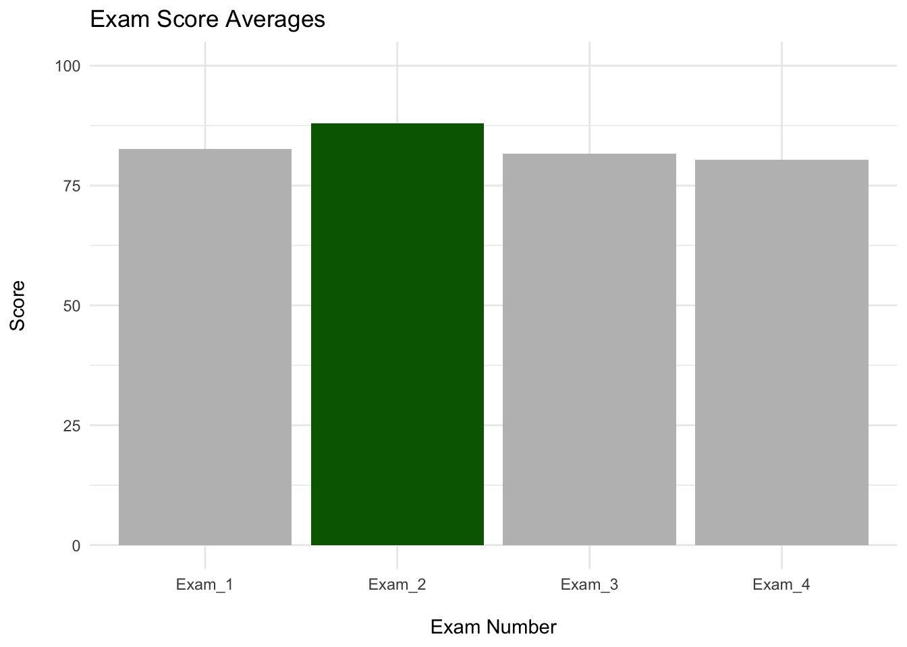
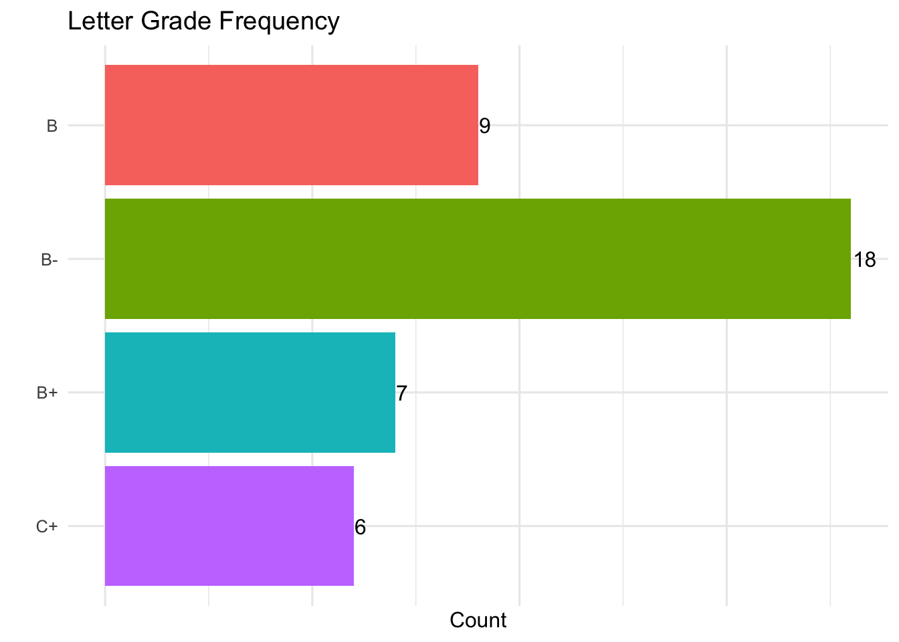
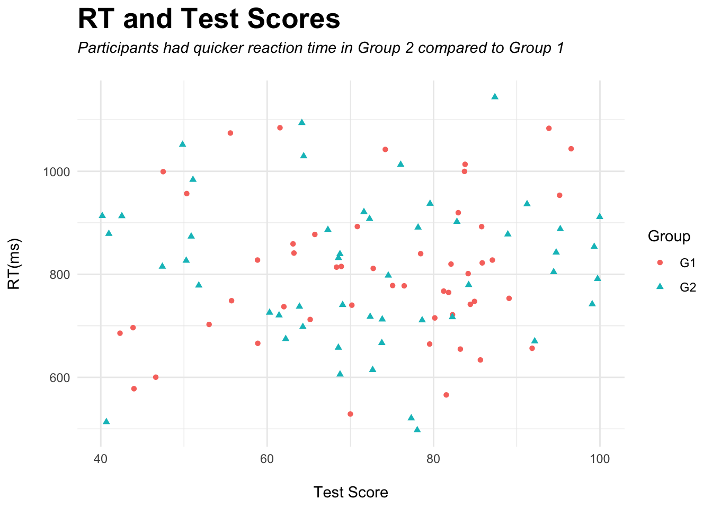

When I first started out with R, I only ever used the base plotting system. This was primarily because once I saw an example of a plot made with ggplot I was a little bit scared.
After awhile I realized that ggplot was the way to go when it came to graphics. The goal of this is to hopefully assuage you to do the same!
First, we will generate some data. I teach so we will use students and scores on a test and then look at how the students performed.
Some of my colleagues use a 4 test grading scheme where each test is worth 25%. Let’s create a sample dataset with a class of 40 students and varying scores for each student as well as an average for each student.
library(ggplot2)library(forcats)library(huxtable)
Attaching package: 'huxtable'
The following object is masked from 'package:ggplot2':
theme_grey
You will see here that each line is followed by a + which indicates that a new layer is being added. Let’s try this out using our dataframe. I will do it the way you will see it most places, and then afterwards only do it the shortened way:
# Use the means we created before and add two line numbers# The x-axis will be the test number, y will be the average # The color will change based on value of the averageggplot(data = test_means,aes(x = Exam, y = Average,fill = Exam)) +# Tells R to plot the value associated with the x-axisgeom_bar(stat="identity",show.legend =FALSE,aes(fill =ifelse(Average ==max(Average),"darkgreen","grey"))) +# A nice theme theme_minimal() +# Specifies x and y axes labels and title for plotlabs(x ="\nExam Number",y ="Score\n",title ="Exam Score Averages") +ylim(0,100) +scale_fill_identity()

I know that there is a lot going on in the example, but it kind of looks nice, right?
Let’s go back to the example and add some filtering. Let’s make a new column that determines whether or not a student passed or failed the test.
When we first made the dataset we included a fifth column, FinalGrade that represents the students overall grade. We will then make a series of statements that will determine what the letter grade is, and then plot the result!
We will be using the |> or pipe operator to pass the contents of test_data into our arranging.
We will first use the mutate function which creates a new column based on the arguments you pass to it.
We will also be using case_when which acts as an ifelse statement but with multiple conditionals.
The basic structure is: case_when(variable=this~make it this)
# Create a new column for final gradefinal_grade <- test_data |>group_by(Student) |>rowwise() |>mutate(FinalGrade =mean(c_across(Exam_1:Exam_4)) ) |>ungroup() |>mutate(LetterGrade=case_when( FinalGrade>=95~"A", FinalGrade>=90~"A-", FinalGrade>=87~"B+", FinalGrade>=84~"B", FinalGrade>=80~"B-", FinalGrade>=74~"C+", FinalGrade>=70~"C", FinalGrade>=67~"D+", FinalGrade>=64~"D", FinalGrade>=60~"D-", FinalGrade<60~"F") ) |>group_by(LetterGrade) |>count()
Our students didn’t do particularly well, but that is to be expected when we control the range their grades can be in!
Next, we will graph the data using ggplot, but this time we will pass the dataframe directly into the plot and remove the x= and y= declarations
When we graph the results the letter grades will be backwards so we will need to use fct_rev to reverse them.
final_grade %>%# Place Grades on X axis and count on Y axis# Color based on Letter Gradeggplot(aes(fct_rev(LetterGrade),n,fill=LetterGrade)) +geom_bar(stat="identity") +theme_minimal(base_size=12) +labs(x="",y="Count",title="Letter Grade Frequency") +# Flip the axes for better readabilitycoord_flip() +# Remove the legend and the axis tickstheme(legend.position ="none",axis.ticks =element_blank()) +# Add the count to the barsgeom_text(aes(label=n,hjust=-.08)) +theme(axis.text.x =element_blank() )

Scatterplots
When I was first learning R in graduate school the class was given a task to plot points but in different colors depending on what gender the points came from. In base plotting this requires the use of not only the plot function but also the points function. It is entirely doable, but ggplot just handles it better!
Let’s generate some data where we have hypothetical participants take an experiment where their reaction time is measured as well as their mood is measured.
Plot Sex against RT and have the colors be linked to the Group of the participant (point).
scatter %>%ggplot(aes(TestScore,RT,color = Group)) +geom_point(aes(shape = Group)) +theme_minimal() +labs(x="\nTest Score",y="RT(ms)\n",title="RT and Test Scores",subtitle ="Participants had quicker reaction time in Group 2 compared to Group 1\n") +theme(plot.title =element_text(size =20, face ="bold"),plot.subtitle =element_text(face ="italic") )

No pattern is emerging from the (fake) data, but we can see a distinction between the different points.
Heatmaps
One of my favorite geom’s to use is geom_tile which creates a heatmap style plot.
Let’s create a fake TV show with fake episode titles and fake episode ratings.
Firstly, I want to take a moment to see how truly excellent some of the episode titles are:
title_samp <-sample(Dave_TV$Title,10)title_samp
[1] "The Colour Meet" "The Meet Price" "The Under List"
[4] "The Tuesday Saturday" "The Money Most" "The Touch Hot"
[7] "The Listen Supply" "The Quality Definite" "The Pence Bar"
[10] "The Cup County"
Anyways, now that our data is in the correct format we can plot it.